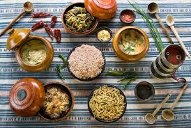
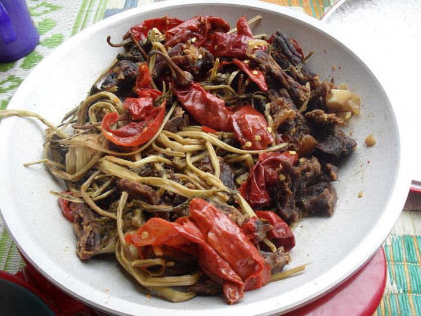
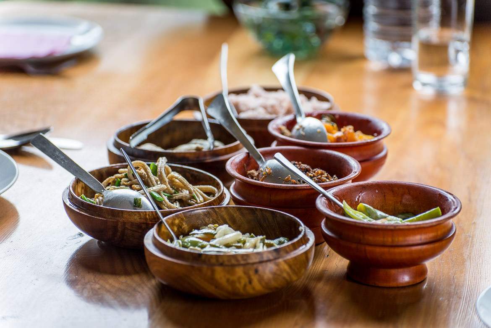
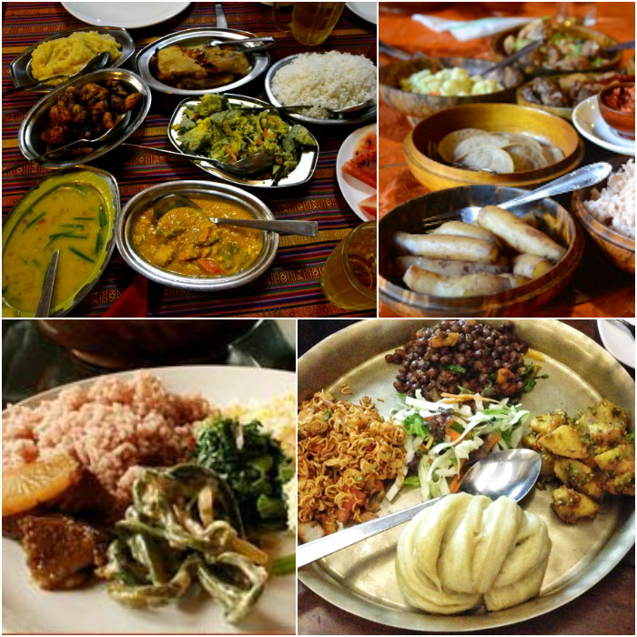

Food
Most Bhutanese meals contain some form or another of rice. It is accompanied by one or two side dishes consisting of meat or vegetables. Pork, beef,and chicken are the meats that are eaten most often. Vegetables commonly eaten include spinach, pumpkins, turnips, radishes, tomatoes, river weed, onions and green beans. Grains such as rice, buckwheat and barley are also cultivated in various regions of the country depending on the local climate.



